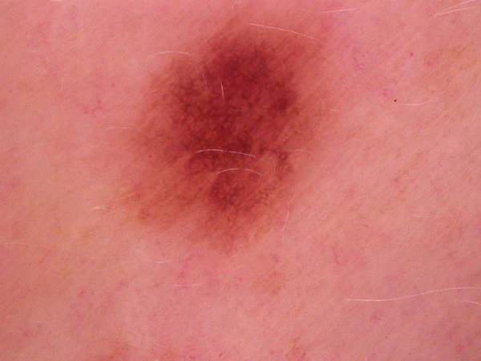
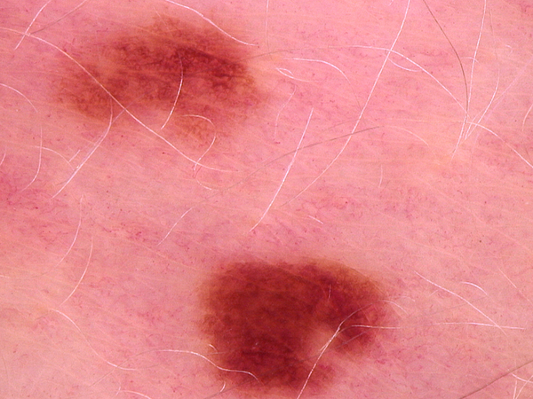
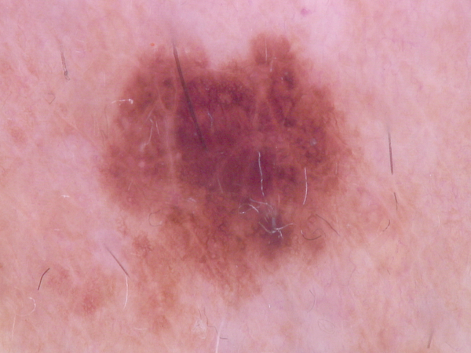
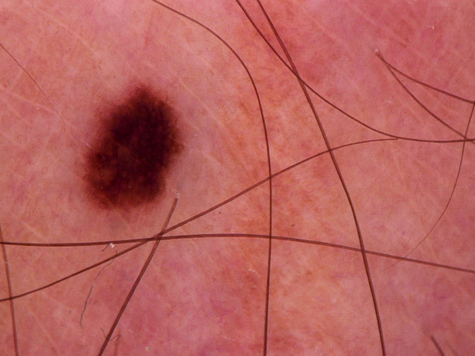

-
What is this lesion?
Melanocytic nevi (i.e. mole) are benign neoplasms of melanocytes and appear in a myriad of variants. They are common lesions in patients with light or fair skin and less common lesions in dark-skinned patients. Most melanocytic nevi that appear in childhood do not go away on their own.
-
What does it look like?
The variants may differ significantly from a dermatoscopic point of view. In contrast to melanoma they are usually symmetric with regard to the distribution of color and structure.
-
Should I see a doctor?
DEPENDS. Melanocytic nevi (i.e. moles) are biologically stable and completely benign neoplasms that rarely evolves into melanoma. However, if you notice changes such as asymmetry, bleeding, or changes in diameter, outline or color, the lesion will require evaluation by a doctor.
-
What the doctor would do about it?
Melanocytic nevi can usually be diagnosed by their typical appearance. They mostly require no treatment and can be safely left alone. They may by removed if cancer is suspected or for cosmetic reasons. Surgical techniques include excision biopsy, shave biopsy and electrosurgical destruction.



